DOBRÉ REALITY-pekná garsónka na prenájom, sídl. Kopanice-rezervovaný
Prievidza
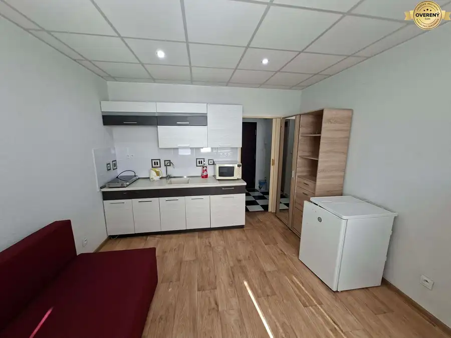
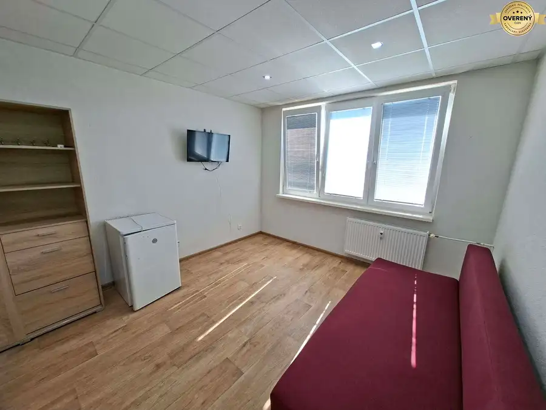
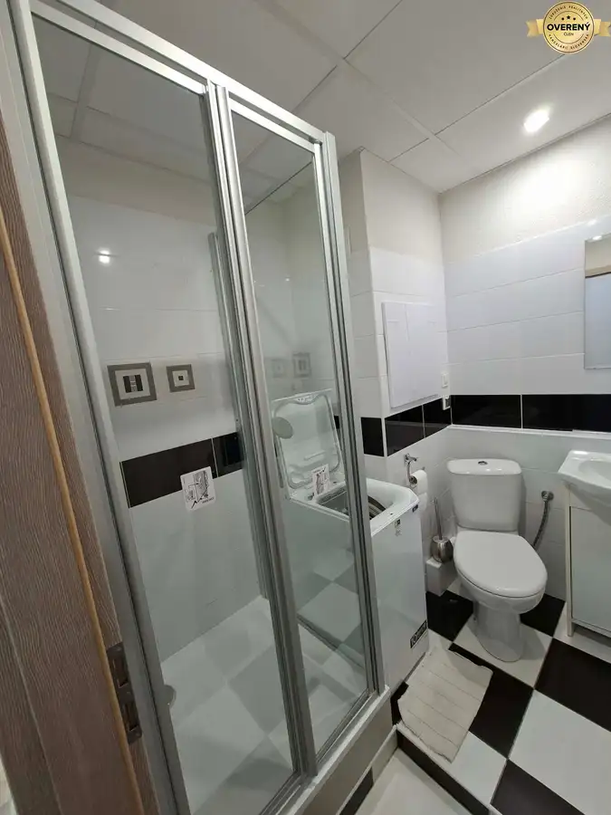
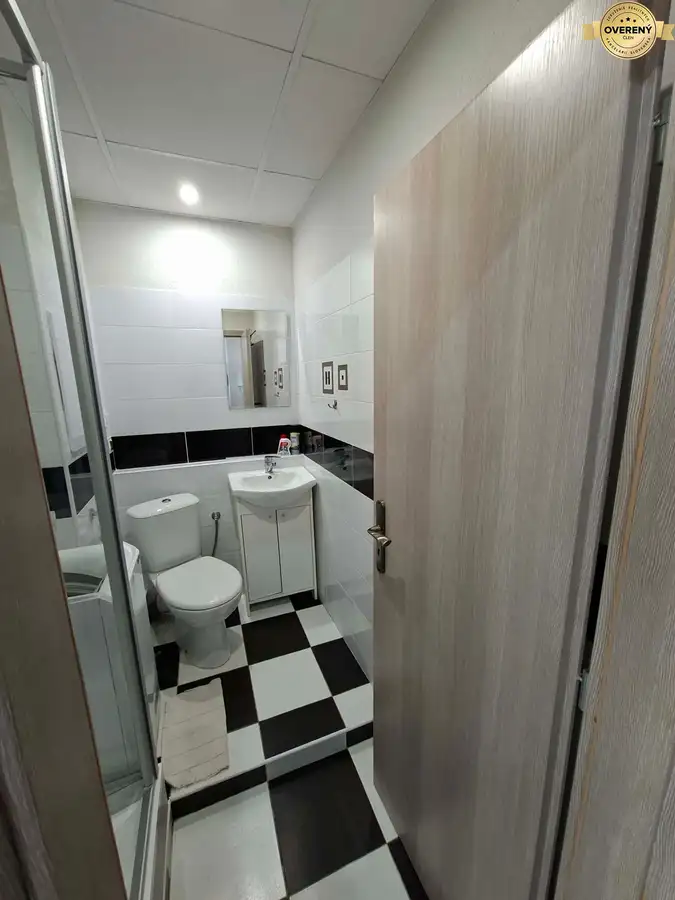
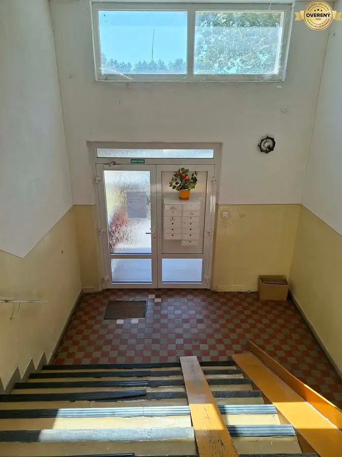
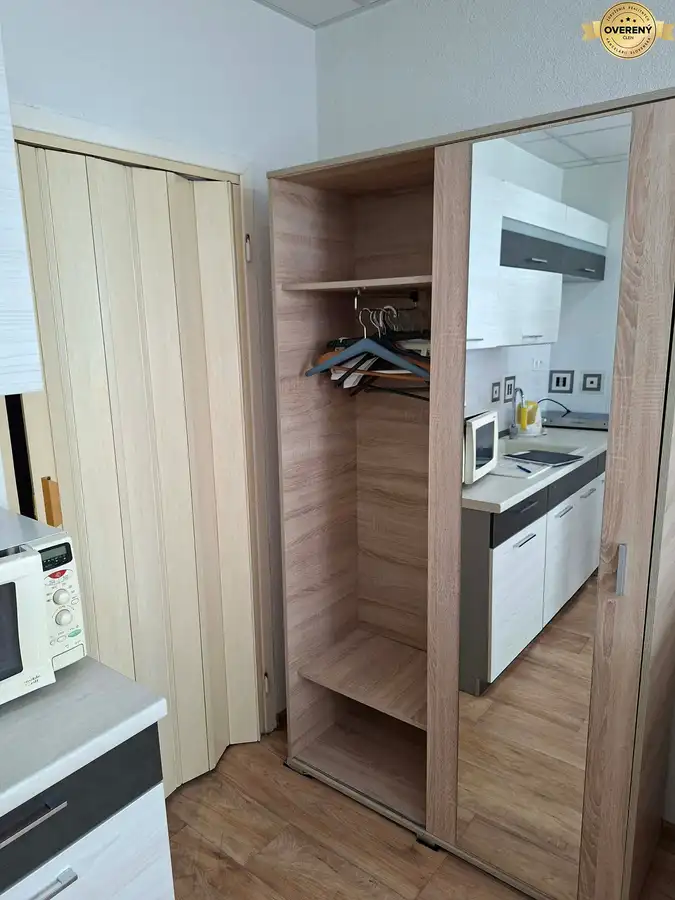
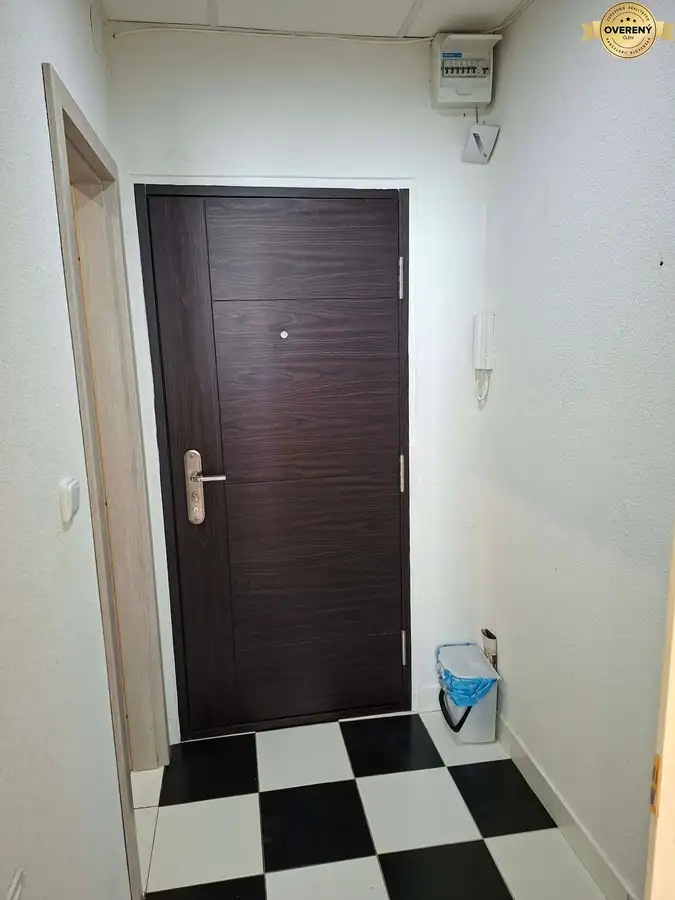
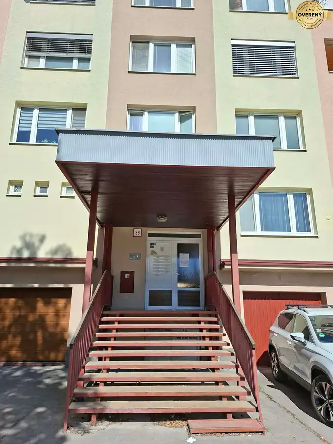
- Dispozícia1-izbový
- Plocha22 m²
- Poschodie2. z 4
- Stavúplne prerobený
- Vlastníctvoosobné
O nehnuteľnosti
DOBRÉ REALITY, s.r.o. Vám ponúkajú na prenájom kompletne prerobenú a zariadenú garsónku v Prievidzi na sídlisku Kopanice v blízkosti Lesoparku. Nachádza sa na ulici Enrgetikov. Úžitková plocha: 22 m2.
Nachádza sa na 2 zo 4 podlaží s výťahom.
Pozostáva z predsiene, kúpeľne s WC, obytnej miestnosti s kuchynským kútom. Byt prešiel kompletnou rekonštrukciou (r. 2017) a je kompletne zariadený ako na fotografiách.
Podlahy: PVC krytina (obytná miestnosť), keramická dlažba (kúpelňa s WC, predsieň). Steny: stierky. Okná: plastové s izolačnými 2-sklami so žalúziami a sieťkami. Vybavenie kúpeľne: nový sprchový kút (7/2026), automatická práčka, toaletný stolík, WC. Vybavenie kuchyne: kuchynská linka, mikrtovlnná rúra, voľne stojaca varná sklokeramická doska, kombinovaná chladnička. V obývacej časti je zánovná rozťahovacia sedacia súprava, šatník, TV prijímač.Na požiadanie je možné miestnosť dovybaviť stolíkom. Kúrenie: centrálne. Byt je vybavený novými bezpečnostnými dverami. Bytový dom je zateplený. Okná sú orientované na SZ. Spoločné priestory sú udržiavané upratovacou službou
Výhody: kompletne prerobený a kompletne zariadený, moderná dobre dispozične riešená kúpelňa s novým sprchovým kútom, slnečný, pekný výhľad, množstvo zelene v okolí, tiché prostredie, Lesopark v susedstve, obchody, škola, škôlka, zastávka autobusu, Lesopark a ihriská v blízkosti, bezproblémové a bezplatné parkovanie.
Cena prenájmu je 360€/mesiac vrátane energií. Pri preberaní bytu sa platí 1. nájomné, rezervačný poplatok vo výške 1 mesačného nájmu a vratný depozit vo výške 2 mesačných nájmov. Byt je voľný okamžite, bez detí a bez domácich zvierat. Obhliadky si môžete dohodnúť na čísle .
DOBRÉ REALITY – Sme spoľahlivá realitná spoločnosť a líder v oblasti realitných služieb.
Viac ako 15 rokov nám dôverujú tisícky klientov po celom Slovensku.
Pomôžeme Vám najvýhodnejšie predať, kúpiť alebo prenajať nehnuteľnosť.
Našim klientom garantujeme:
- osobný prístup a spoľahlivé služby,
- profesionálne spracovanie inzercie,
- bezpečný priebeh celého procesu.
Vaša nehnuteľnosť bude široko inzerovaná na najdôležitejších inzertných portáloch, vrátane
platených. U nás máte istotu prvotriedneho servisu a služieb po celom Slovensku.
Najspokojnejší REALITNÍ MAKLÉRI sú súčasťou úspešného tímu DOBRÉ REALITY. Ak chcete
spokojne a bez stresu pracovať v oblasti nehnuteľností v príjemnom firemnom prostredí, určite
spolupracujte s nami. O výhodách spolupráce s nami sa už presvedčili mnohí začínajúci aj skúsení
realitní makléri.
DOBRÉ REALITY sú členom Združenia realitných kancelárií Slovenska (ZRKS) a Realitnej únie SR.
Parametre
- Úžitková plocha
- 22 m²
- Poschodie
- 2/vyššie poschodie
- Počet poschodí
- 4
- Počet izieb
- 1
- Vlastníctvo
- osobné
- Stav
- úplne prerobený
- Status
- aktívne
- Odvoz odpadu
- áno - separovaný
- El. napätie
- 230V
- Plyn
- nie
- Kúpeľňa
- sprchovací kút
- Vykurovanie
- spoločné – vlastná kotolňa
- Balkón
- nie
- Lódžia
- nie
- Terasa
- nie
- Pivnica
- nie
- Garáž
- nie
- Výťah
- áno
- Parkovanie
- verejné
- Inžinierske siete
- áno
- Postavené z
- panel
- Zariadenie
- zariadený
- Zateplený objekt
- áno
- Strecha
- po rekonštrukcii
- Klimatizácia
- nie
- Energetický certifikát
- nie
- Predzáhradka
- nie
- Bezbariérový prístup
- nie
- Okná
- plastové
- Orientácia
- severozápadná
- Terén
- mierny svah
- Prístupová cesta
- asfaltová cesta
- Dátum zverejnenia
- 2026-09-10
Kde to je
Mohlo by Vás zaujímať
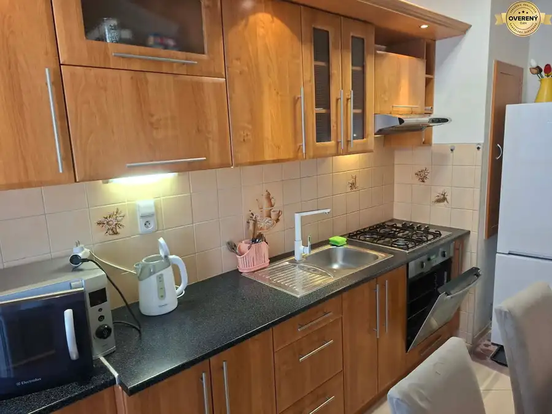
BytNové 131 000 €DOBRÉ REALITY-Kompl. prerobený a zariadený 3-i byt na predaj, Zapotôčk Prievidza 3-izbový62 m²3. podlažie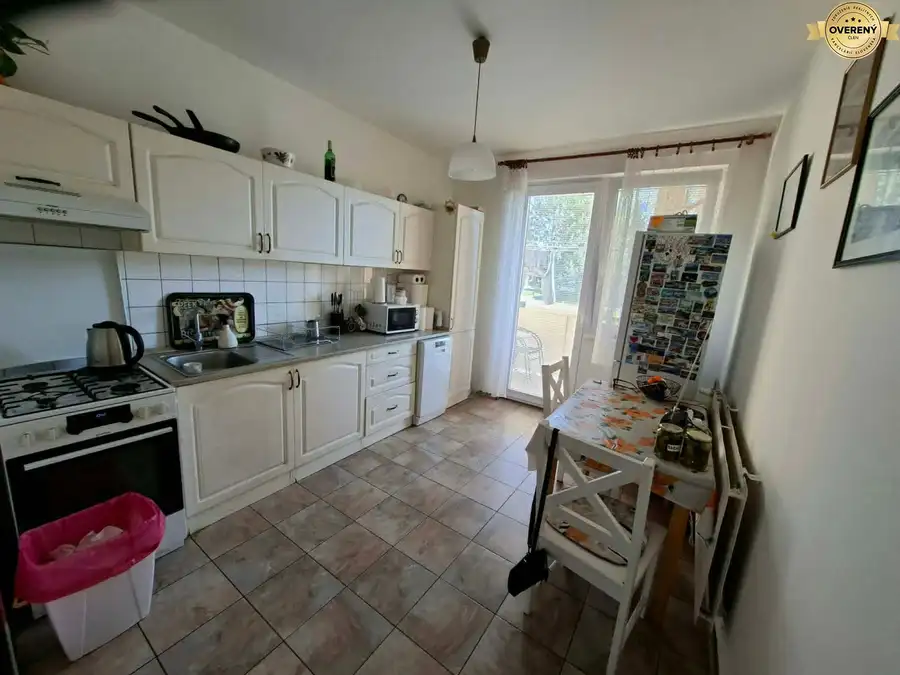
BytNové 133 000 €DOBRÉ REALITY-Kompl. prerobený 3-i byt s loggiou na predaj, Zapotôčky Prievidza 3-izbový70 m²1. podlažie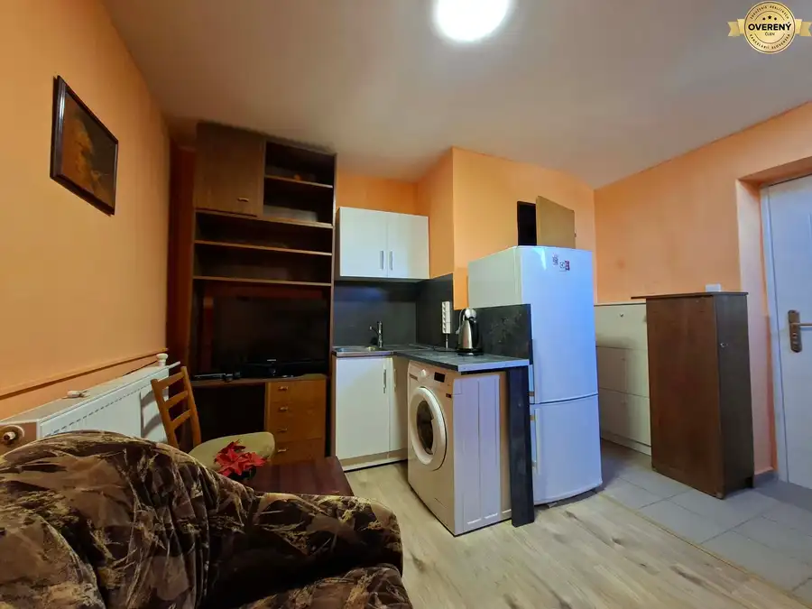
BytNové 320,- €DOBRÉ REALITY-útulná garsónka v rod. dome na prenájom, Prievidza Prievidza 1-izbový20 m²1. podlažie